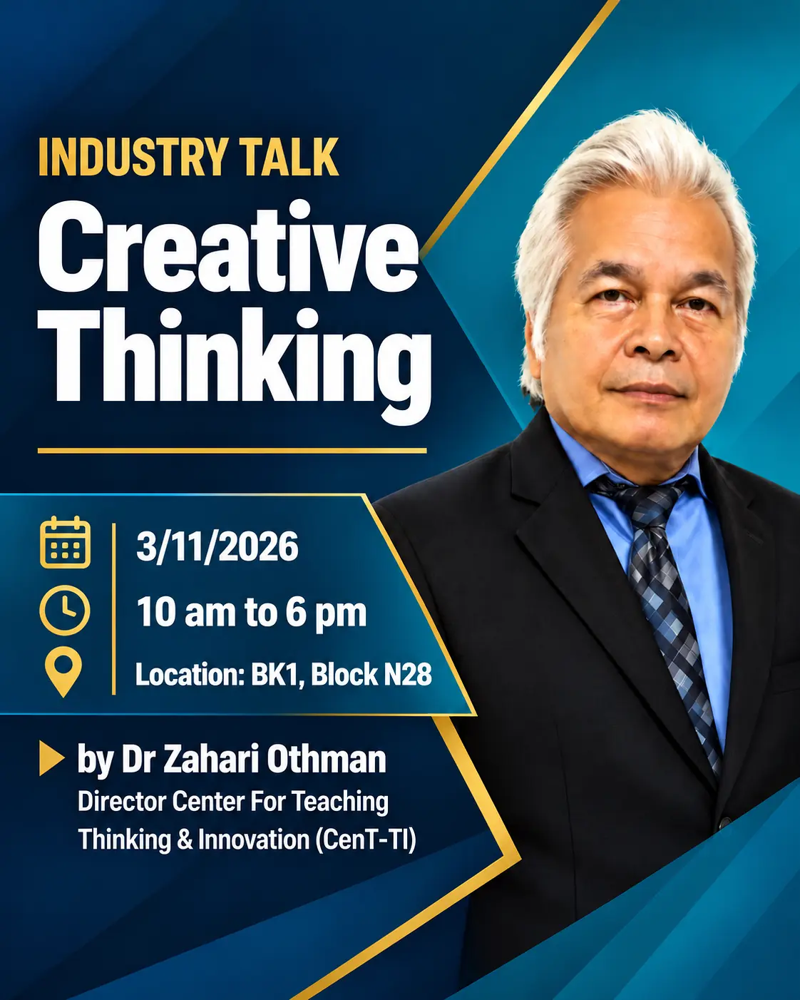

Cover
- A proper title and a representative picture
- Titles of the topics covered in the report
- Names and pictures of group members
Assignment 1 · Industry Talk 1 · Academic Writing · 5%
Write a three-page academic report on the Creative Thinking industry talk as a group. Submission deadline: Friday, 20 November 2026, before 5.00 pm.
The talk

Instructions
Prepare an academic writing report. It should not exceed three pages.
Support your content with references from academic papers. Cite them in the text as (author name, year).
Each member writes their own reflection on the talk: how will you succeed in computer science and data engineering over the next three years?
Group work
This is a group work. Name your file with your group code, for example S03-G1.pdf. Find your group code →
Upload the report in .pdf format before 5.00 pm on Friday, 20 November 2026.
Upload the report (.pdf) to GitHub and share it on LinkedIn one week after your UTM e-Learning submission.
Format and integrity
Reference format
Cite references in the text with the author's last name and the year of publication.
Preneel (2003) noted that the process of replacing the old algorithms with new ones is time consuming and cumbersome.
Lenstra and Verheul (2001) proposed a model that formulates a set of assumptions as a guideline for selecting adequate key size for practical security.
Small block size is also vulnerable as it is prone to dictionary attack (Canniere et al., 2006).
Newton-Euler (NE) equations (Luh et al., 1980a) … Luh et al. (1980b) presented an example of an acceleration control of robot arm/manipulator.
List all cited references alphabetically. Works by the same author are listed chronologically (for example, Preneel 2001 before Preneel 2003). Write the author's surname followed by initials, and separate multiple authors with commas.
| Resource | Format and example |
|---|---|
| Book | Author (Year). Title. (Edition). Place published: Publisher. Example: Stallings, W. (2003). Cryptography and Network Security: Principles and Practices. (3rd ed.). Upper Saddle River, New Jersey: Prentice Hall. |
| Article in a book | Author of the article (Year). Title of the article. In author or editor of the book. Title of the book. (page). Place published: Publisher. Example: Hussein, S. B., Jamaluddin, H., Mailah, M. and Zalzala, A. M. S. (2000). An Evolutionary Neural Network Controller for Intelligent Active Force Control. In Parmee, I. C. (Ed.) Evolutionary Design and Manufacturing (pp. 351–362). London: Springer-Verlag. |
| Journal article | Author (Year). Title of the article. Title of the Journal. Volume (Issue no.), page. Example: Lenstra, A. K. and Verheul, E. R. (2001). Selecting Cryptographic Key Sizes. Journal of Cryptology. 14(4), 255–293. |
| Conference article | Author (Year). Title of the article. Name of the conference. Date of the conference. Place, page. Example: Sheta, A. F. and De Jong, K. (1996). Parameter Estimation of Nonlinear Systems in Noisy Environments Using Genetic Algorithms. Proceedings of the 1996 IEEE International Symposium on Intelligent Control. 15–18 September. Dearborn, Michigan: IEEE, 360–365. |
| Thesis | Author (Year). Title of the thesis. Thesis award. Place published. Example: Rijmen, V. (1997). Cryptanalysis and Design of Iterated Block Ciphers. Ph.D. Thesis, Katholieke University Leuven, Belgium. |
| Internet | Organisation/author (Year). Title of article. URL address. Available online day month, year. Example: EPIC (2005). Census and Privacy. http://www.epic.org/privacy/census/. Available online 15 February 2005. |
| Newspaper (online) | Author. (Year, date). Title of article. Name of newspaper. Retrieved date, year, from URL address of the newspaper. Example: Rosmawati Mion (2006, June 17). Sindiket judi haram tumpas. Utusan Malaysia. Retrieved June 19, 2006, from http://www.utusan.com.my |
| Resource | Format and example |
|---|---|
| Newspaper (print, no author) | Title of article. (Year, date). Name of newspaper, page. Example: Gearing up to meet new challenges. (2000, February 22). The Star. p. 2. |
| Newspaper (print, with author) | Author. (Year, date). Title of article. Name of newspaper, page. Example: Izatun Shari (2000, April 18). K-economy: draft out in October. New Straits Times. p. 2–4. |
| Magazine | Author. (Year). Title of article. Name of magazine, Volume/Issue no., page. Example: Smith, B. L. (1994). Biofeedback. Science, 62, 673–675. |
| Legislation | Name of the country (Year). Title of the legislation. Legislation number. Example: Malaysia (1983). Perintah Monumen Lama dan Tapak Tanah Bersejarah. P.U.(A)41 1983. |
| Standard | Name of the institution (Year). Standard number. Place published: Publisher. Example: British Standards Institution (1990). B.S. 764. London: British Standards Institution. |
| Patent (print) | Author (Year). Patent number. Place published: Official source. Example: Smith, I. M. (1988). U.S. Patent No. 123,445. Washington DC: U.S. Patent and Trademark Office. |
| Patent (electronic) | Author (Year). Patent number. Retrieved on date, year, from URL address of the patent database. Example: Ulrich, K. (2001). European Patent No. EP1162184. Retrieved on March 7, 2002, from ftp://ep.espacenet.com/ |
| Brochure | Name of organisation (Year). Title [Brochure]. Place published: Publisher. Example: Research and Training Center (1993). Guidelines for Reporting and Writing About People with Disabilities [Brochure]. Lawrence, KS: Macmillan. |
| Measured drawing | Author (Year). Title. [Measured drawing]. Name of organisation: Place published. Example: Salim Man (1989). Pengisi Sekam ke Dalam Kontena Penyimpan: Pandangan Isometrik. [Lukisan Teknik]. Universiti Teknologi Malaysia: Skudai. |
| Unpublished material | Author (Year). Title. Unpublished note, Name of organisation. |
| CD-ROM | Author. (Year). Title of article. [CD-ROM]. Title of Journal, Volume, page, Publisher. Example: Ivry, R. B. (1995). Perception and production of temporal intervals across a range of durations. [CD-ROM]. Journal of Experimental Psychology, 21, 3–18. American Psychological Association. |
Assessment
| Criteria | Weight | Excellent (10–7) | Fair (6–4) | Poor (3–0) |
|---|---|---|---|---|
| Informative and attractive | 10 |
|
|
|
| Contents | 25 |
|
|
|
| Reflection | 25 |
|
|
|
| Report features | 10 |
|
|
|
| Organisation and structure | 10 |
|
|
|
| Text | 5 |
|
|
|
| Log activity | 10 |
|
|
|
| Timeliness | 5 |
|
|
|
| Total | 100 | Converted to 5% of the course assessment | ||
Template
Copy this table into your report or GitHub README and fill it in as you work. Record every search, AI prompt and task.
ASSIGNMENT 1 – INDUSTRY TALK 1: CREATIVE THINKING Group code: S0X-GX Log activity | No | Date | Member | Task | Source / search / AI prompt used | Output / GitHub link | |----|------|--------|------|----------------------------------|----------------------| | 1 | | | | | | | 2 | | | | | | | 3 | | | | | | | 4 | | | | | |